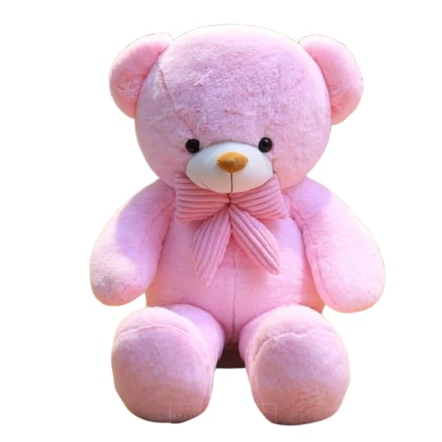

Your First Teddy Bear in Valentine's Day!
Hello, Baby! This is your Baby PINKY! 💗
I don't know where I am right now, but I hope you're always safe. I'll always be watching over you and cheering you on from behind, no matter where you go. 🥹❤️
Sorry if I wasn't bought right away. JM didn't have a job yet back then, so he was still broke. 😆 But I'm really happy that, in the end, JM chose me to be yours. 💕
Joke aside... Happy 22nd Monthsary, Baby! Thank you for loving us—especially your JM. I hope every time you hug me, you'll remember that he's always with you, even when he's not physically beside you. I love you! ❤️🐷💗